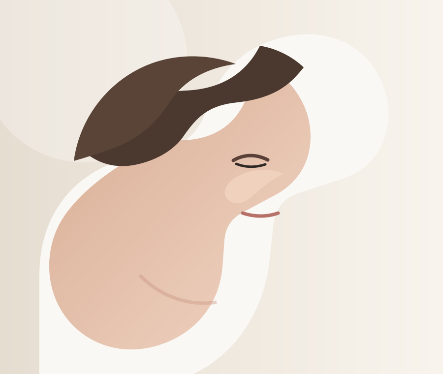
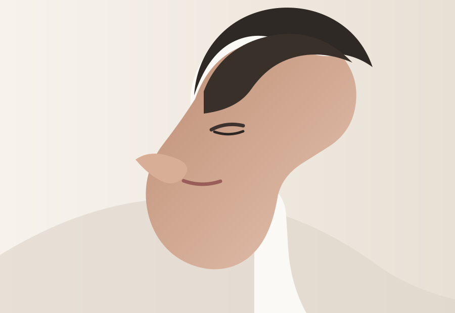
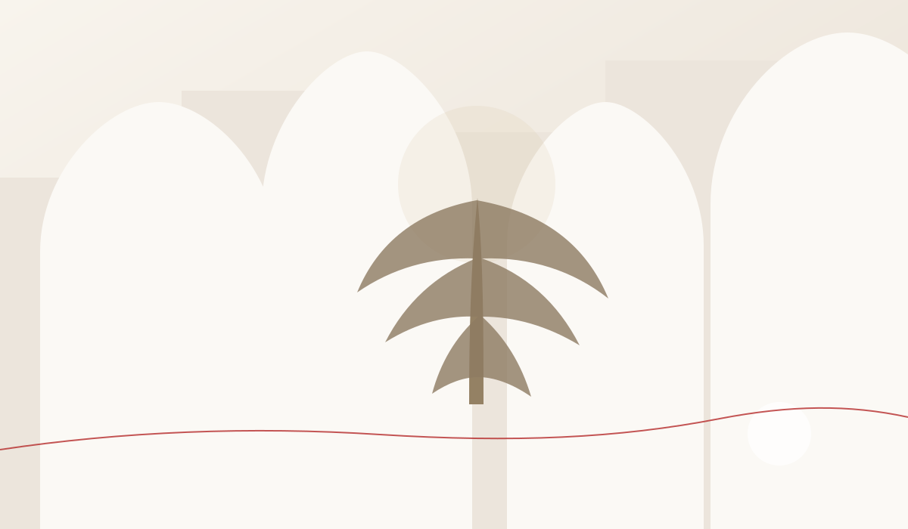

Встретить любовь
Без обещаний и сценариев. Просто оставить место настоящей встрече.

ГРАВИТАЦИЯ
За ролями, статусами и привычными сценариями. Без свайпов и витрины. Чтобы встреча начиналась не с анкеты, а с живого присутствия.
Увидеть того, кто перед тобой. Настоящего.
О КЛУБЕ
Мы убираем шум, маски и спешку, чтобы человек мог быть собой и по-настоящему увидеть другого.
Здесь не нужно специально «знакомиться». Контакт возникает через общий опыт, атмосферу и живое взаимодействие.

ЧТО МОЖЕТ СЛУЧИТЬСЯ ЗДЕСЬ?
Без обещаний и сценариев. Просто оставить место настоящей встрече.
Людей, с которыми совпадает не статус, а внутренний ритм.
По бизнесу, проекту или идее, которая давно ждёт второго человека.
Новые проекты, коллаборации, дружбу, путешествия и неожиданные союзы.
Иногда другой человек становится самым честным зеркалом.
КАК МЫ СОЗДАЁМ ПРОСТРАНСТВО ВСТРЕЧИ

ЭТО НЕ ПРО ВОЗРАСТ. ЭТО ПРО СОСТОЯНИЕ.
Ты живой, любопытный, открытый и хочешь большего, чем ещё один чат.
На старте клуб ориентирован на взрослых людей 25–52 лет.
Ты выбираешь честность, глубину, развитие и уважение к границам другого.
МЕСТО, ГДЕ ВОЗМОЖНА ВСТРЕЧА
Не просто оказаться рядом. А позволить другому увидеть тебя настоящего.
Первые камерные мероприятия пройдут в Краснодаре. Участие — после короткой заявки и знакомства с организаторами.
FAQ
Не в привычном смысле. Романтическая встреча возможна, но цель шире: создавать пространство для живых человеческих связей, дружбы, любви, партнёрства и совместных идей.
Нет. В клубе могут встречаться люди с разным жизненным контекстом. Важны честность, уважение к другим участникам и ясность собственных намерений.
Потому что атмосфера создаётся людьми. Мы хотим заранее понять человека и сохранить качество, безопасность и баланс сообщества.
Первые мероприятия планируются в Краснодаре. Конкретная площадка и формат сообщаются подтверждённым участникам.
ВОЗМОЖНО, ТВОИ ЛЮДИ УЖЕ ЗДЕСЬ
Это не конкурс и не собеседование. Нам важно понять, кто ты, чего ждёшь от сообщества и как с тобой связаться.
Анкета работает в защищённом приложении клуба. Данные и фотография сохраняются напрямую в нашей базе Google.